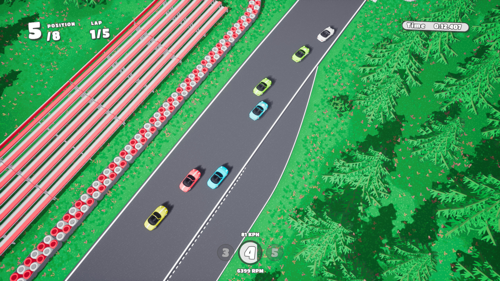

Mini Racer is a prototype circuit racer with a top-down camera angle, cartoony visual style, and custom arcade vehicle physics. Features up to 20 vehicles per race, competitive AI drivers, and vehicle customization.
20 vehicle race gameplay

Several cars power out of a tight hairpin

Vehicle customization enables custom colours and liveries. Seperate colours can be chosen for the car's body, front wheels, rear wheels, and brake calipers.

Cedar Creek - chicane

Cedar Creek - hairpin

A pack of cars accelerate down a straight

Sliding through a long right hand corner